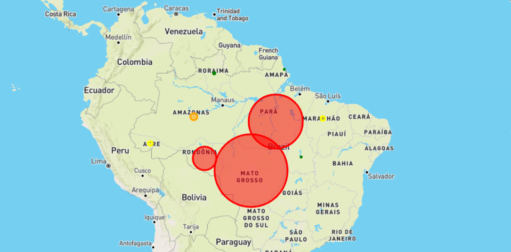

Rainforest Deforestation Study |
|
|---|---|
|
This page is dedicated to an exploration of the Deforestation of the
Amazonian Rainforest
utilizing data
provided by Kaggle. Contributors to this ProjectJohn Strode: Github Jorge Daniel Atuesta: Github John Cass: Github This project has been greatly expanded and improved by John Strode, since it's inital deployment |

|
Background and TakeawaysBetween 1990 and 2016, the world lost 502,000 square miles (1.3 million square kilometers) of the forest. That is equivelant to an area larger than South Africa.The Amazon rainforest was selected for this project as it is the largest rainforest in the world. The data used covers the time period from 2004-2019, which were critical years in the war against deforestation. In 2003, the Brazilian government began regulating deforestation. Initially, illegal deforestation decreased starkly as seen in the chart, however, after 2008 began to rise again in certain regions. It is noted in the Geographic Article that at this time the government began to lower their gaurd and there is even speculation of crooked politics for profit at play. |
|
|
This analysis was partially inspired by the below linked National Geographic
article by Christina Nunez |
|
